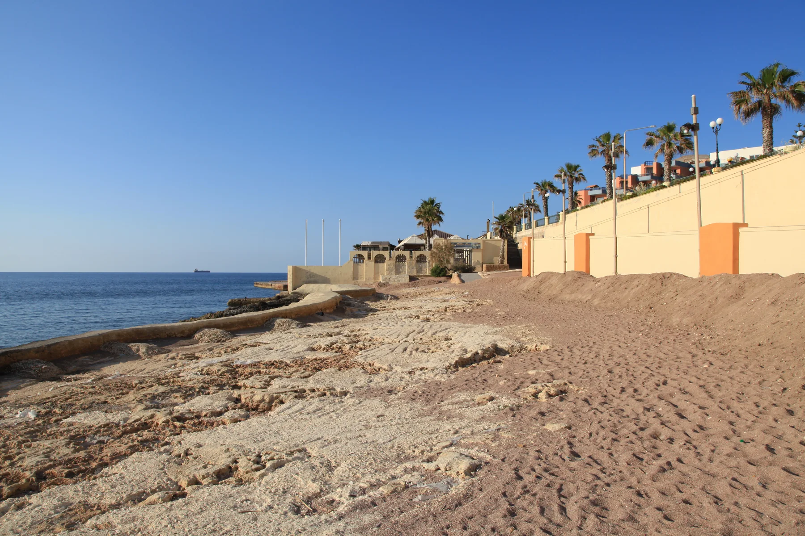

The council lists Buġibba Bay Square at Triq Dawret il-Gżejjer. Confirm a listing's actual route, event conditions, noise, works and access on the viewing day.
BUĠIBBA · START WITH THE EXACT ADDRESS
Three coastal contexts, one careful read.
Bay Square, the Bognor waterfront and the Dawret il-Gżejjer and Perched Beach edge sit inside one connected urban area. Each has a different viewing context, while Qawra and the older St Paul's Bay core remain distinct property labels.

ONE CONTINUOUS URBAN AREA, PRECISE LABELS
Do not let the street grid erase the place name.
The Local Council includes Buġibba within San Pawl il-Baħar and describes Buġibba, Qawra and neighbouring areas as one connected urban build-up. That administrative and physical continuity does not make every address interchangeable. Verify the stated locality, frontage and building entrance before making a property-specific claim.
Environmental Health places official monitoring point C25 at the beginning of Buġibba promenade, with a rocky beach, Roman salt pans and a breakwater. That does not prove a view or short walk from a property.
Official points C26 and C27 sit along this coastal edge, but their shore descriptions are not identical. Check the exact endpoint, current access and live bathing notices.
Three monitored points, not one generic beach.
The Government profile separates St Paul's Bay Waterfront (Bognor), Bay Square and Perched Beach. It records rocky, cemented and artificially replenished shore contexts. The annual classification is not a daily water, weather, sea-state or access report.
Bathing Water Profile 19 ↗Conditions move faster than a guide.
Use the live Bathing Water Programme and local notices before swimming or planning shore access. A property viewing should separately check the route, crossings, gradient, surfaces and any temporary works from the exact entrance.
Current monitoring programme ↗AUTHORITY- AND OPERATOR-BACKED EXAMPLES
Everyday, food, family and heritage anchors.
These examples establish context without becoming a ranking or complete directory. They do not promise current hours, prices, availability, admission, appointments, accessibility, parking or distance from a property.
Mosta catchment
Primary HealthCare includes Buġibba in the Mosta Health Centre catchment. Confirm the appropriate service, appointment route and current availability directly.
Authority source ↗Buġibba WaterPark
Parks in Malta records a seasonal children's water-play facility. Its operating season, sessions, rules, access and supervision remain live operator checks.
Park source ↗Buġibba Temple
The national inventory records prehistoric temple remains in the Dolmen Hotel grounds and Class B scheduling. It does not establish public access or a route through private grounds.
National Inventory entry 00056 ↗Peking Malta
The operator identifies a family-run Buġibba venue on Triq it-Turisti. Treat it as one sourced example and check the current menu, hours, booking, delivery and access directly.
Operator source ↗Qawra and old St Paul's Bay stay separate.
The council and planning evidence describe a continuous built-up area, but a shared council and uninterrupted streets do not turn Buġibba, Qawra, the older St Paul's Bay core, Xemxija, Salina or Burmarrad into interchangeable search labels. Use the verified address and the exact property context.
No line over the bay becomes a journey.
This preview draws no neighbourhood boundary, generic walking route, road ETA, bus timetable, taxi price or ferry. Walking geometry, bus schedules, current car-traffic estimates and taxi-price observations require separate sources, exact endpoints, mode and timestamp. No ferry is assumed for an ordinary Buġibba property journey.
Load Bay Square, Bognor and the Perched Beach edge only when useful.
The broad OpenStreetMap frame keeps the three viewing contexts visible and shows neighbouring edges only for orientation. It draws no administrative boundary, property route, water crossing or journey time and loads only after your click.
San Pawl il-Baħar Local Council geography and history · Local Council squares · Government planning evidence · Bathing Water Profile 19 · live bathing programme · Primary HealthCare · Parks in Malta · National Inventory entry 00056 · Peking Malta · Wikimedia Commons image record

No ranking, permanent opening, current bathing condition, property-specific route, guaranteed view, parking claim, accessibility promise or locality-wide journey time is claimed.